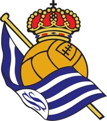
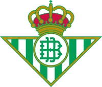

Хоккей и футбол в цифрах, а не на эмоциях
Прогноз на каждый матч от собственной модели. Итоги — все, и минусы. Выбери поле.
Прогноз дня
Самый уверенный прогноз модели на сегодня — по хоккею и по футболу. Отсчёт идёт до начала матча.
 Ак Барс
Ак БарсПример данных. Прогноз выйдет в канале до 08:00 МСК.
 Ла Лига, 21:00 МСК
Ла Лига, 21:00 МСК
Реал Сосьедад
БетисПример данных. Футбол — проба с 30.10, прогнозы пока черновиками.
Как думает модель
До матча модель разыгрывает его тысячи раз. Ставка — только там, где расчёт и линия сходятся.
- Форма
Последние игры
Сила атаки и обороны, место в таблице лиги, свежие матчи весят больше.
- Линия
Кэфы рынка
Кэфы сравниваются с вероятностью модели: где они расходятся, там и смотрим.
- Выбор
От 60 % и 1,6–2,3
Самое вероятное событие в коридоре кэфов. Нет такого — честно пишем, что ставки нет.
Честные итоги
Каждое утро в канале — итоги вчерашних матчей, и зашедшие, и нет. У каждого прогноза номер поста: любой можно проверить.
Хоккей, октябрь 2026
Зашло 108 из 153 прогнозов, 42 не зашло, 3 возврата. Средний кэф 1,78.
Футбол, проверка 2025/26 вслепую
284 ставки «ВЫБОР» от 60 %: обещала модель → зашло. Живые итоги — после двух недель пробы.
Хоккей — выгрузка итогов на 30.10; футбол — предварительно.
Все прогнозы — в Telegram
Посты на каждый матч, ролики и итоги дня. Подписка бесплатная.
Это платно?
Нет. Прогнозы, итоги и ролики в Telegram-канале @jarvibet бесплатные.
Какие лиги?
Хоккей: КХЛ и НХЛ. Футбол: АПЛ, Ла Лига, Серия А, Бундеслига, Лига 1, Португалия и Лига чемпионов.
Что такое «ВЫБОР»?
Ставка, у которой модель даёт от 60 % при кэфе от 1,6. Остальные матчи — разбор без выбора.
Почему кэф 1,6–2,3?
Ниже — мало смысла рисковать, выше — больше случайности, чем расчёта.
18+. Аналитика, а не призыв делать ставки. Выигрыш не гарантирован.